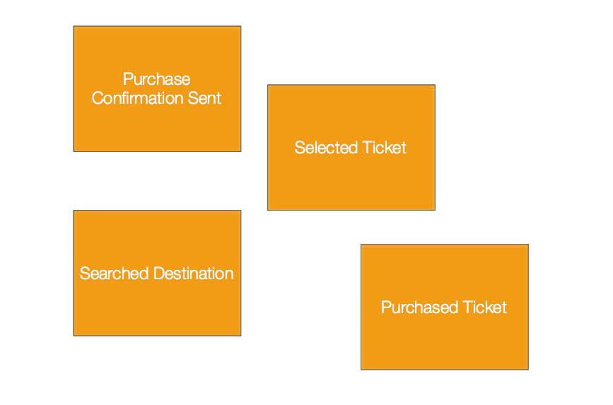
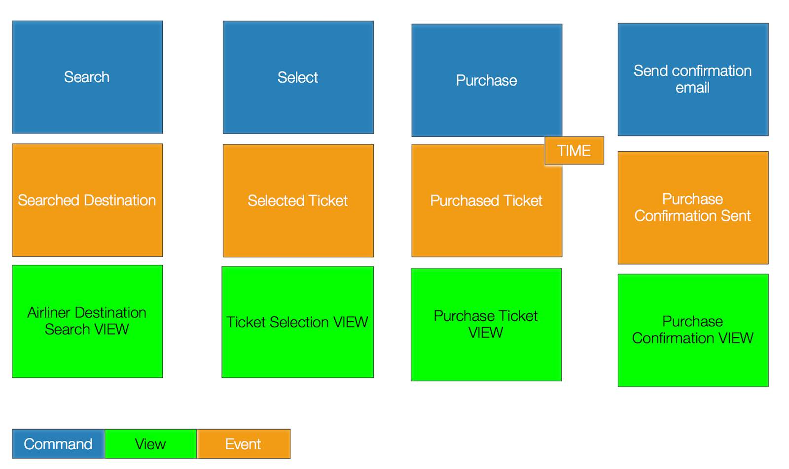
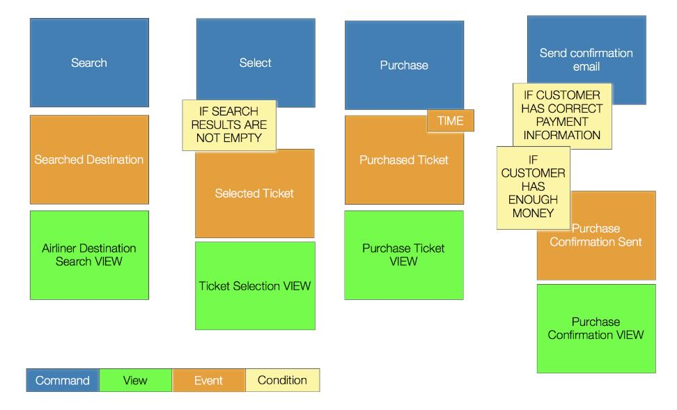
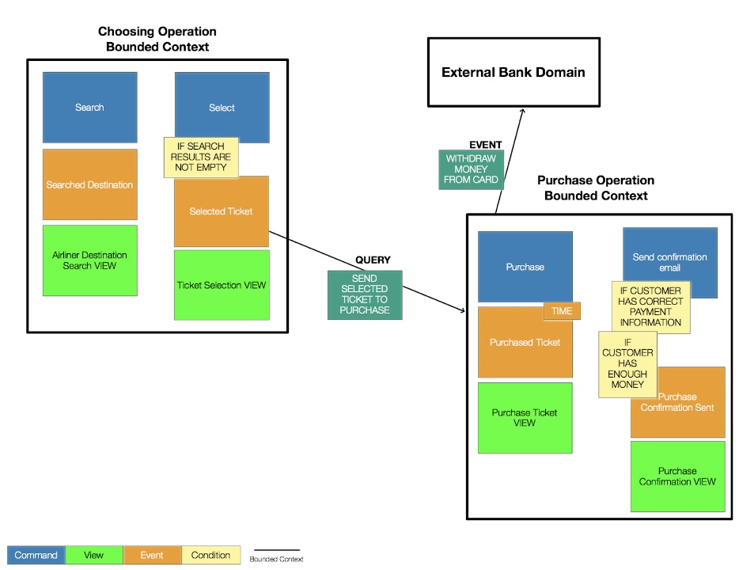

In the first article I explain why DDD was important for building new modern systems that are modular in design. In this article I will explain how Event Storming as a practice in DDD can be used to identify the right decomposition and Microservices.
When using DDD we are on a trip for deep learning about how the business works, and then model the software based on our learning. It is important to align software domain models with what the domain experts had in mind. Event Storming is a process of learning, experimenting, and learning more and modeling again. I like to think of it as a way of iteratively learning from the unknown.
Event storming is a fast design technique that is meant to engage Domain Experts and developers in a learning process. It is focused on the business and business process rather than on nouns and data. It focuses everyone on events and the business process rather than on classes and the database. Event Storming is a very visual approach which dismisses code from the experimentation and puts everyone on the same level with the design process.
In this example, I will present a way of working with Event Storming to understand what is going on in our business problems. We usually work with Event storming on a big wall with many colorful sticky notes. It’s important that business and technical people work together.
The simple system we want to build should be able to:
A domain event is a record of some business action in a bounded context (software component that has specific things and does specific things). Domain Events should be represented as verbs in the past tense such as CustomerMoved, PackageShipped or BankTransactionRecorded. These are things that have completed in the past. The first step is to write down what can happen in our domain using orange sticky notes. These are the domain events in our business.
Business domain experts should be able to know the why of an event. These can be called a command which can be colored as blue.
The green sticky notes is called display views. This is very similar to model view controller pattern in regular MVC architecture. The green sticky notes are the view in that MVC model. Conditions (invariants) are the yellow sticky notes as seen below. Much of the the logic in between a command (blue) and an event(orange) is there in the yellow sticky notes. Our system will work on many commands here. Use Domain-Driven Design techniques or the hexagonal architecture. Areas that contain a few or zero yellow notes are clear and easy to implement in code.
Once you have completed defining part of the design stage, you are ready to draw boundaries and lines with arrows to show flow on your modeling surface.
You will most likely find boundaries for different conditions like: departmental divisions, or when a concept is important but not really part of the core domain or when many different business individuals have conflicting meanings for the same term.
Confirmation within a payment context may mean something completely different than confirmation within shipping context. That's why bounded contexts group relate language, meaning, and culture differently. By defining bounded contexts, we start to understand the subdomains of our system and how they interact without talking about code at all.
We can follow a simple pattern to be able to split our domain into a very cohesive area
Command A (Search Command) is fired and it causes Event A (Searched Destination).
Event A (Searched Destination) effects View A (Airliner Destination Search View).
View A (Airliner Destination Search View) is also needed while doing a condition that uses Command B (Select Command)
Command A (Search Command) and Command B (Select Command) might be good to be in one module together. I have called it for Choosing Operation, as seen below and have applied the same principles on the rest of our board/wall.
Putting them together might look like this:

After separating and dividing our modules, we will map how they communicate with other modules by using Context-mapping. A module sends a query to another module - Choosing Operation Module sends a query with a selected ticket to the Purchase Operation Module. Our purchase module sends an event to an external context (Bank Domain) for issuing the bank the airline ticket purchase. A confirmation email is sent to the customer right after that.
From there, you start working more on the technical decisions and how to implement this further in code.
Happy Event Storming :)